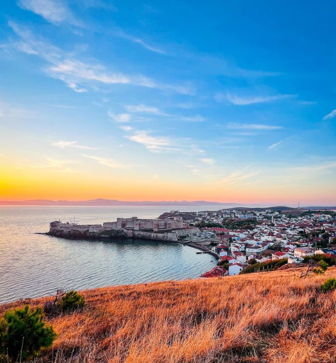
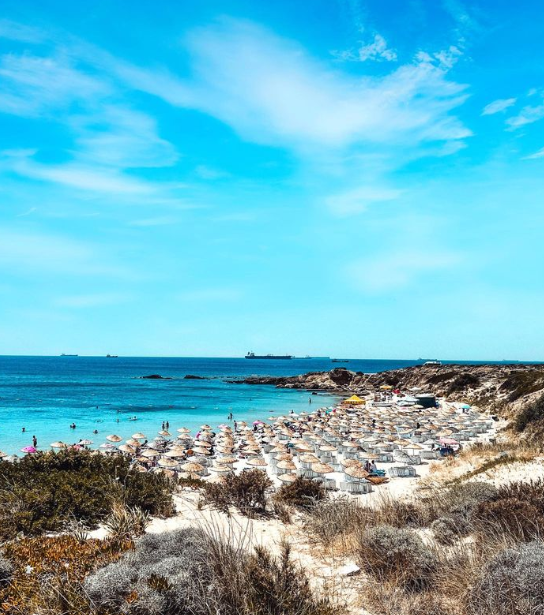
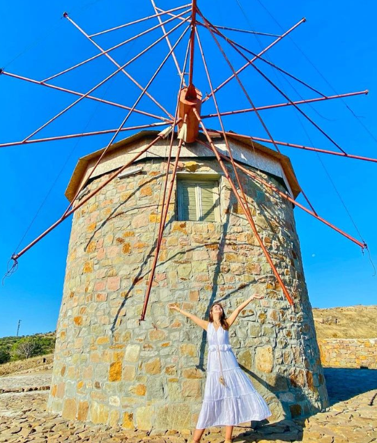

-
Polante Feneri
Çanakkale’nin Bozcaada ilçesinde Batı Burnu’nda Polente Feneri’nin de bulunduğu bölgede yer alan rüzgar gülleri adanın adeta simgesi olmuş durumda. Özellikle yaz aylarında akşam güneşin batışını seyretmek için rüzgar güllerinin bulunduğu bu bölgeye gelenler bu anın tadını çıkarıyorlar.
-
Akvaryum Koyu
Akvaryum Koyu oldukça küçük ama bir o kadar yoğun bir plajdır. Yaz aylarında adaya gelen hemen herkes tarafından ziyaret edildiğinden oldukça kalabalıktır. Buna rağmen belki de hayatınızda görebileceğiniz en temiz ve berrak koylardan birisi olabilir.
-
Yel Değirmeni
2019 yılında Bozcaada Kaymakamlığı tarafından restore edilen yel değirmenleri yıllar sonra ada silüetine tekrar eklenmiş oldular. Eskiden ada merkezinin iki yanındaki tepeler yel değirmenleri ile doluymuş. Bunlardan kalıntıları kalan üç tanesi tamamen elden geçirilerek ayağa kaldırılmış.